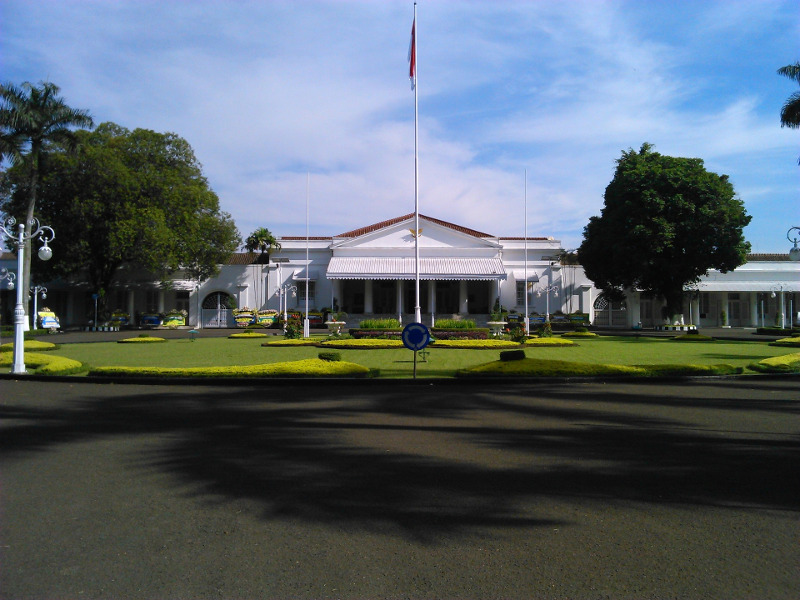
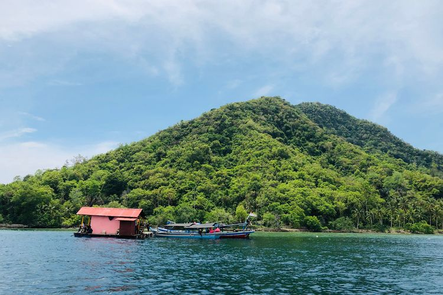

Sejarah

Kendatipun Provinsi Lampung sebelum tanggal 18 maret 1964 tersebut secara administratif masih merupakan
bagian dari Provinsi Sumatera Selatan, namun daerah ini jauh sebelum Indonesia merdeka memang telah
menunjukkan potensi yang sangat besar serta corak warna kebudayaan tersendiri yang dapat menambah khasanah
adat budaya di Nusantara yang tercinta ini. Oleh karena itu pada zaman VOC daerah Lampung tidak terlepas
dari incaran penjajahan Belanda.
Tatkala Banten dibawah pimpinan Sultan Agung Tirtayasa (1651-1683) Banten berhasil menjadi pusat
perdagangan yang dapat menyaingi VOC di perairan Jawa, Sumatra dan Maluku. Sultan Agung ini dalam upaya
meluaskan wilayah kekuasaan Banten mendapat hambatan karena dihalang-halangi VOC yang bercokol di Batavia.
Putra Sultan Agung Tirtayasa yang bernama Sultan Haji diserahi tugas untuk menggantikan kedudukan mahkota
kesultanan Banten.
Geografi

LampLambang Lampungung adalah sebuah provinsi paling selatan di Pulau Sumatera, Indonesia. Di sebelah utara
berbatasan dengan Bengkulu dan Sumatera Selatan.Provinsi Lampung dengan ibukota Bandar Lampung, yang
merupakan gabungan dari kota kembar Tanjungkarang dan Telukbetung memiliki wilayah yang relatif luas, dan
menyimpan potensi kelautan. Pelabuhan utamanya bernama Pelabuhan Panjang dan Pelabuhan Bakauheni serta
pelabuhan nelayan seperti Pasar Ikan (Telukbetung), Tarahan, dan Kalianda di Teluk Lampung. Sedangkan di
Teluk Semangka adalah Kota Agung (Kabupaten Tanggamus), dan di Laut Jawa terdapat pula pelabuhan nelayan
seperti Labuhan Maringgai dan Ketapang. Di samping itu, Kota Menggala juga dapat dikunjungi kapal-kapal
nelayan dengan menyusuri sungai Way Tulang Bawang, adapun di Samudra Indonesia terdapat Pelabuhan Krui
Wisata
Sejak dibukanya Jalan Tol Cipularang, kota Bandung telah menjadi tujuan utama dalam menikmati liburan akhir
pekan
terutama dari masyarakat yang berasal dari Jakarta sekitarnya. Selain menjadi kota wisata belanja, kota
Bandung
juga dikenal dengan sejumlah besar bangunan lama berarsitektur peninggalan Belanda.
Waikambas

Taman Nasional Way Kambas merupakan salah satu taman nasinional yang memiliki berbagai flora dan fauna.
Lokasinya terletak di Kecamatan Labuhan Ratu, Lampung Timur. Tempat ini juga menjadi lokasi pelatihan,
perlindungan, dan konservasi Gajah Sumatera. Di sini pengunjung dapat belajar dan berinteraksi langsung
dengan para gajah. Baca juga: Wisata Lampung Tak Hanya Way Kambas dan Teluk Kiluan Way Kambas juga kerap
dijadikan tempat penelitian satwa-satwa langka, baik dari peneliti nusantara maupun peneliti asing.
Pulau Pahawang

Pulau Pahawang menawarkan pesona bawah laut nan indah yang belum banyak diketahui. Lokasinya berada di
Kecamatan Marga Punduh, Kabupaten Pesawaran, Provinsi Lampung. Pulau dengan luas 1.084 hektar ini memiliki
hutan bakau, pantai pasir putih, dan pemandangan bawah laut yang cantik. Baca juga: 10 Tempat Wisata di
Lampung, Cocok Dikunjungi saat Libur Pulau ini sangat cocok untuk berenang di pantai, banana boat,
snorkeling, atau sekadar bersantai di pantai. Ada pula sejumlah homestay yang dapat dijadikan tempat
bermalam.